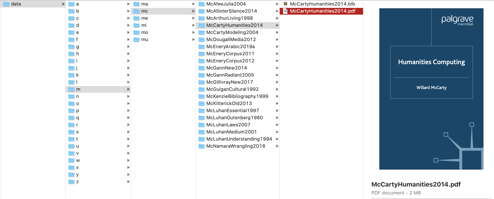

7 Lesson 07
7.1 Building Memex - Step 1
First and foremost, we need to build the structure for our memex. This involves the following steps:
- loading our bibTeX data and parsing it properly into a dictionary (you can build on the solution to the previous lesson);
- looping through the dictionary of our bibliographical data in order to save relevant information into the structure of our memex, which shoould be as shown on the screenshot below. Such folder structure is very easy to generate computationally knowing only the citation key of each publication, which will allow to manipulate our data with ease, no matter how massive it becomes.

7.1.1 Pseudocode
- load bibliographical data into a dictionary
- some data will need to be filtered, fixed, and probably reformatted slightly, etc. (build on the previously created function); use your Zotero data;
- loop through your dictionary and process each record:
- generate relative path for your record
- this path will consist of two parts:
- the path to your memex folder (either relative or absolute); this one you can define in your yml settings file (something like
./MEMEX_SANDBOX/data/). - the relative path to a publucation within your memex folder
- the relative path must be generated from the citation key of each publication like this —
./1stLetter/2firstLetters/citeKey/ - thus, if the key is
McCartyHumanities2014, the path must be./m/mc/McCartyHumanities2014/(subFolder =key.lower()[0]; subSubFolder =key.lower()[:2]; subSubSubFolder =key; Question: Why would we need to.lower()?)
- the relative path must be generated from the citation key of each publication like this —
- the path to your memex folder (either relative or absolute); this one you can define in your yml settings file (something like
- create the subfolder, using this path
- save into this folder a bibTeX record for the publication with the name
key.bib(i.e.,McCartyHumanities2014.bib); - copy the PDF file into this folder and save it in a similar manner:
key.pdf(i.e.,McCartyHumanities2014.pdf).
- this path will consist of two parts:
- generate relative path for your record
7.1.2 Code snippets
Some of the following code snippets should be helpful (although you may find different ways of getting to the same results, which is, of course, totally fine).
Snippet 1: Load YML File into a Dictionary
Snippet 2: Create Folder, if Does Not Exist
Snippet 3: Copy File to a Distination
where scr is the path to where the file was, and dst is the path to where you want your file. Keep in mind, that in dst you can use the name of the file that you want!
Snippet 4: Making Path Properly
As you remember from our introduction to command line, Mac and Windows format paths differently, which will create issues if manually construct the path. The best way to avoid any issues is to construct paths with a proper library.
7.2 Homework
- the assignment is described above
- additionally, take the solution scripts from the previous lesson and annotate every line of code; submit your annnotations together with the main assignment
- upload your results to your homework github repository
7.3 Homework Solution
7.3.1 Pseudocode
- creating the overall structure for our MEMEX on HDD
- using out bibliographical data, we algorithmically generate paths for each publication
- we create those paths
- we copy relevant data into those paths:
- bibliographical record (bib);
- PDF files
Let’s break it down into smaller steps:
- first of all, it will actually be easier of take a look at this task from another perspective.
- we should start from a single publication, or, better, a single bibliographical record.
- after we figure out how to process a single publication, we will just need to figure out how to process all of them
- so, let’s start with a single bib record:
- (we have written a function before that creates a dictionary from every bib record (let’s call it loadBib()); so let our function take such a single-record dictionary as its argument);
- what will we need from our function (let’s call it processBibRecord())? it must do the following:
- to generate a unique path for the publication
- check if that path exists, if not: create it
- save bib record into that folder
- copy PDF to that folder
- what do we need to consider:
- we need a simple and transparent way to algorithmically generate all this data, which will ensure easy access, browsability, and overall transparency of our approach. In order to achieve it, we can use a single element from each record to generate all necessary paths and filenames. Namely, the citation key.
- path: our path will be a concatenation of the path to memex (for example,
./MEMEX_SANDBOX/data/) and a subpath unique to each publication, which we can generate from the citation key.- for example, if the citation key is
SavantMuslims2017, the publication path should be/s/sa/SavantMuslims2017/ - the concatenated path thus will be:
./MEMEX_SANDBOX/data/s/sa/SavantMuslims2017/ - NB: it may be a good idea to have a small function that takes paths to memex and the citation key as its arguments and returns the final path (let’s call it generatePublPath()).
- for example, if the citation key is
- now, that we have the path, we can check whether it exists, and, if not, create it
- now, we have our path and the actual folder on HDD, it is easy-peasy-lemon-squeezy to save a bibliographical record and a PDF into that folder.
- for the same considerations of machine-readability, we should use use the citation key to name our files: for example,
SavantMuslims2017.bibfor our bibliographical record, andSavantMuslims2017.pdffor our PDF file.
- for the same considerations of machine-readability, we should use use the citation key to name our files: for example,
- now, we have a function that does all that we need from a single record, we can write another function (let’s call it processAllRecords()) that will
- take the large bibliographical dictionary generated with loadBib() as its argument
- loops through this dictionary, and processes each record with processBibRecord().
7.3.2 Note on Folder/File Organization
It is crucial that all our files have their places and there are only as many files as we need. Otherwise, things get unmanageable very quickly.
- Create
memex_sandboxrepository on github- add
.gitignorewith template for Python - edit
.gitignoreon github.com, by adding the following two lines to the top
- add
_data/
.DS_Store- Clone the repository to your machine
- Let’s organize everything nicely here. Like this:
_bib/: all bibliography-related files- Zotero bibliography
- language codes dictionary
- etc.
_data/: folder where we will be generating all the data; this folder is added to.gitignoreso that none of the data would be uploaded to github (reason: copyright)_misc: all other miscellaneous files go here; we can also move all the files we no longer need into this folder (keeping the main folder clean).settings.ymlshould look something like:
7.3.3 Script (1_build_structure.py)
import os, shutil, re
import yaml
###########################################################
# VARIABLES ###############################################
###########################################################
settingsFile = "./settings.yml"
settings = yaml.load(open(settingsFile))
memexPath = settings["path_to_memex"]
###########################################################
# FUNCTIONS ###############################################
###########################################################
# load bibTex Data into a dictionary
def loadBib(bibTexFile):
bibDic = {}
with open(bibTexFile, "r", encoding="utf8") as f1:
records = f1.read().split("\n@")
for record in records[1:]:
# let process ONLY those records that have PDFs
if ".pdf" in record.lower():
completeRecord = "\n@" + record
record = record.strip().split("\n")[:-1]
rType = record[0].split("{")[0].strip()
rCite = record[0].split("{")[1].strip().replace(",", "")
bibDic[rCite] = {}
bibDic[rCite]["rCite"] = rCite
bibDic[rCite]["rType"] = rType
bibDic[rCite]["complete"] = completeRecord
for r in record[1:]:
key = r.split("=")[0].strip()
val = r.split("=")[1].strip()
val = re.sub("^\{|\},?", "", val)
bibDic[rCite][key] = val
# fix the path to PDF
if key == "file":
if ";" in val:
#print(val)
temp = val.split(";")
for t in temp:
if t.endswith(".pdf"):
val = t
bibDic[rCite][key] = val
print("="*80)
print("NUMBER OF RECORDS IN BIBLIGORAPHY: %d" % len(bibDic))
print("="*80)
return(bibDic)
# generate path from bibtex code, and create a folder, if does not exist;
# if the code is `SavantMuslims2017`, the path will be pathToMemex+`/s/sa/SavantMuslims2017/`
def generatePublPath(pathToMemex, bibTexCode):
temp = bibTexCode.lower()
directory = os.path.join(pathToMemex, temp[0], temp[:2], bibTexCode)
return(directory)
# process a single bibliographical record: 1) create its unique path; 2) save a bib file; 3) save PDF file
def processBibRecord(pathToMemex, bibRecDict):
tempPath = generatePublPath(pathToMemex, bibRecDict["rCite"])
print("="*80)
print("%s :: %s" % (bibRecDict["rCite"], tempPath))
print("="*80)
if not os.path.exists(tempPath):
os.makedirs(tempPath)
bibFilePath = os.path.join(tempPath, "%s.bib" % bibRecDict["rCite"])
with open(bibFilePath, "w", encoding="utf8") as f9:
f9.write(bibRecDict["complete"])
pdfFileSRC = bibRecDict["file"]
pdfFileDST = os.path.join(tempPath, "%s.pdf" % bibRecDict["rCite"])
if not os.path.isfile(pdfFileDST): # this is to avoid copying that had been already copied.
shutil.copyfile(pdfFileSRC, pdfFileDST)
###########################################################
# PROCESS ALL RECORDS #####################################
###########################################################
def processAllRecords(bibData):
for k,v in bibData.items():
processBibRecord(memexPath, v)
bibData = loadBib(settings["bib_all"])
processAllRecords(bibData)
print("Done!")